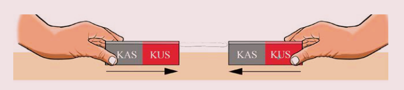

Kazi ya kufanya namba 4
Mahitaji: Sumaku mbili za mche mstatili na meza
Hatua
1.
Weka sumaku mche mstatili moja juu ya meza.
2.
Chukua sumaku mche mstatili nyingine, na isogeze ncha ya KAS karibu na ncha ya KAS ya sumaku mche mstatili iliyo juu ya meza.
Angalia au sikiliza maelezo ya Kielelezo namba 3 (a). Je, nini kimetokea?
3.
Sogeza tena ncha ya KAS ya sumaku mche mstatili karibu na ncha ya KUS ya sumaku mche mstatili iliyo juu ya meza.
Je, nini kimetokea?
